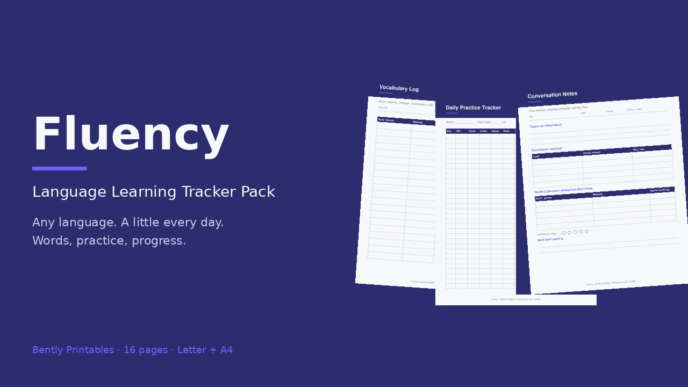

16 printable pages, Letter + A4
- Language profile (level A1–C2, goals, milestones)
- Vocabulary log with spaced-review ticks
- Daily practice tracker · streak calendar · weekly goals
- Conversation notes · grammar notes · verb/conjugation table
- Media log (podcasts, shows, books) · monthly review
- 3 blank masters (vocab log, conversation notes, lined)
Start free
Download the vocabulary log page, then grab the full pack.